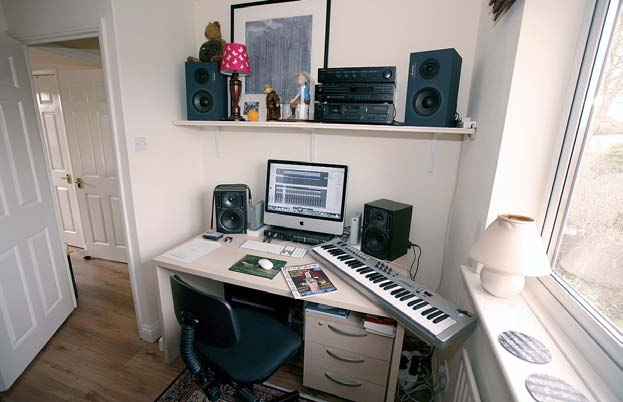
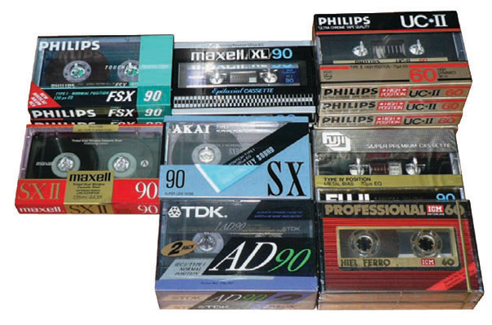

Nuestro hogar como espacio de trabajo musical

Antes de analizar los diferentes métodos de grabación del sonido para llegar al formato que nos interesa (el digital), tenemos que comprender primero que lo más importante para generar sonido es el silencio. Por lo tanto, nuestro lugar de trabajo deberá ser lo más silencioso posible. A los fnes de grabar un demo casero no es necesario que acusticemos en modo alguno nuestra sala pero será importante mantener las ventanas cerradas, sobre todo si vivimos en un edifcio de una gran ciudad, para evitar que el ruido de los automóviles nos arruinen la grabación. El uso de cortinas pesadas puede ayudar a reducir este tipo de fltraciones. Será conveniente disponer de una buena luz, si no es posible solar, artifcial, ya que pasaremos muchas horas frente a la pantalla de nuestro monitor. No conviene que nuestra computadora sea la misma de uso común de toda la familia, ya que la instalación de videojuegos y otros programas innecesarios para el músico ocupará un gran espacio en nuestro disco rígido, que los archivos de audio van a necesitar, pero si no hay otro remedio procuraremos mantenerla lo más limpia posible (en el Capítulo 3 aprenderemos a utilizar un freeware especializado para la eliminación de los archivos innecesarios que día a día una computadora genera para poder trabajar y que luego ya no nos hacen falta). Si el ruido permanece pese a las precauciones, la noche es un gran momento para trabajar con audio. Podemos utilizar auriculares, entre otras cosas, para no molestar a los vecinos, aunque nunca debemos usarlos a volumen demasiado alto porque con los años podemos llegar a dañar nuestra audición. Por otra parte, existen vidrios especiales que disminuyen el sonido no deseado que llega del exterior y contribuyen a una mejor salud auditiva para quienes viven en grandes ciudades, sean o no músicos.
Grabación en medios magnéticos

Existen dos maneras de grabación sobre medios magnéticos: la analógica y la digital. Un ejemplo de grabación analógica sobre medios magnéticos es el casete de audio de toda la vida. Aunque hay otras formas como la cinta abierta (utilizada hasta principios de los años 90) y el magazine, similar al casete, solo que se trataba de una cinta sinfín que al fnalizar la reproducción volvía a la primera pista, y que fue muy
popular en los primeros estéreos para automóviles.
La otra manera de grabar en un medio magnético es la digital yl os primeros experimentos al respecto se desarrollaron sobre cintas normales de audio: en la década del 80 podíamos encontrar programas y juegos para computadoras grabados en casetes. Mediante unas grabadoras especiales que se conectaban a la computadora, la cinta grababa los datos en forma de sonidos ininteligibles para el ser humano. Luego, estos sonidos eran decodifcados por la computadora que, en un proceso interno, los convertía a ceros y unos, es decir, a datos digitales. Este sistema de grabación evolucionó primero en disquetes (hechos de un material similar al de las cintas) y luego en los discos rígidos que aún hoy se utilizan en la mayoría de las computadoras. En el caso de los discos rígidos, el frágil material de las cintas fue sustituido por discos rígidos de metal y se logró así un grado muy superior de conservación. En los años 90, antes del CD, se popularizó en los estudios de grabación el sistema DAT. Este consistía en un casete de cinta magnética que almacenaba datos digitales con una calidad muy superior a los viejos casetes de audio, puesto que los DAT fueron ideados desde su origen para el almacenamiento de datos digitales y no analógicos.
En el ámbito de la videoflmación, la evolución fue similar a la del audio: primero los registros se hicieron de manera analógica en formatos como U-Matic y Betacam, para el ámbito profesional, y VHS, para el afcionado, pero luego se popularizaron formatos de grabación digital sobre cinta, como el DV, muy utilizado aún en la actualidad, incluso entre afcionados.
Como conclusión, podemos decir que sobre un mismo medio, el magnético, existen dos maneras de grabación: la analógica y la digital. Nosotros con la computadora vamos a realizar una grabación digital sobre un medio magnético: el disco rígido. Luego, esa grabación digital podremos plasmarla de manera digital también en un CD, DVD o pendrive, o bien de manera analógica en un VHS o casete de audio por medio de la salida de auriculares de nuestra PC (pero ¿quién podría querer hacer algo así hoy en día, verdad?).